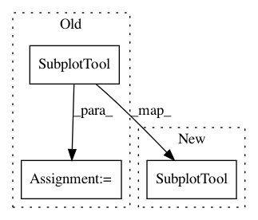

94ea287acb15c5afcfb452841cef18349251ace2,lib/matplotlib/backends/_backend_tk.py,ConfigureSubplotsTk,init_window,#ConfigureSubplotsTk#,965
Before Change
canvas = type(self.canvas)(toolfig, master=self.window)
toolfig.subplots_adjust(top=0.9)
_tool = SubplotTool(self.figure, toolfig)
canvas.draw()
canvas.get_tk_widget().pack(side=tk.TOP, fill=tk.BOTH, expand=1)
self.window.protocol("WM_DELETE_WINDOW", self.destroy)
After Change
canvas = type(self.canvas)(toolfig, master=self.window)
toolfig.subplots_adjust(top=0.9)
SubplotTool(self.figure, toolfig)
canvas.draw()
canvas.get_tk_widget().pack(side=tk.TOP, fill=tk.BOTH, expand=1)
self.window.protocol("WM_DELETE_WINDOW", self.destroy)
In pattern: SUPERPATTERN
Frequency: 4
Non-data size: 3
Instances
Project Name: matplotlib/matplotlib
Commit Name: 94ea287acb15c5afcfb452841cef18349251ace2
Time: 2018-11-18
Author: 2836374+timhoffm@users.noreply.github.com
File Name: lib/matplotlib/backends/_backend_tk.py
Class Name: ConfigureSubplotsTk
Method Name: init_window
Project Name: matplotlib/matplotlib
Commit Name: 94ea287acb15c5afcfb452841cef18349251ace2
Time: 2018-11-18
Author: 2836374+timhoffm@users.noreply.github.com
File Name: lib/matplotlib/backends/backend_wx.py
Class Name: ConfigureSubplotsWx
Method Name: configure_subplots
Project Name: matplotlib/matplotlib
Commit Name: 94ea287acb15c5afcfb452841cef18349251ace2
Time: 2018-11-18
Author: 2836374+timhoffm@users.noreply.github.com
File Name: lib/matplotlib/backends/backend_wx.py
Class Name: NavigationToolbar2Wx
Method Name: configure_subplots
Project Name: matplotlib/matplotlib
Commit Name: 94ea287acb15c5afcfb452841cef18349251ace2
Time: 2018-11-18
Author: 2836374+timhoffm@users.noreply.github.com
File Name: lib/matplotlib/backends/backend_wx.py
Class Name: SubplotToolWX
Method Name: __init__